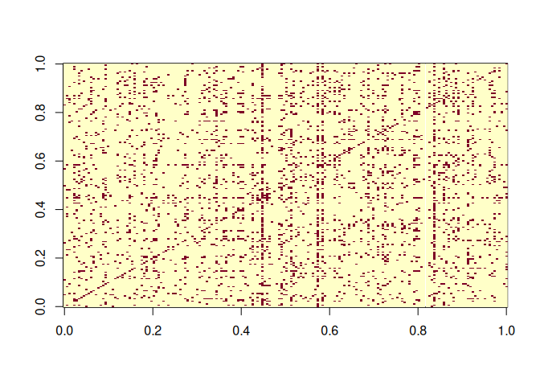
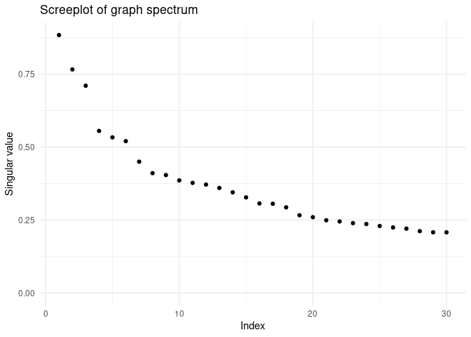
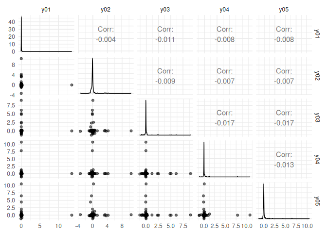
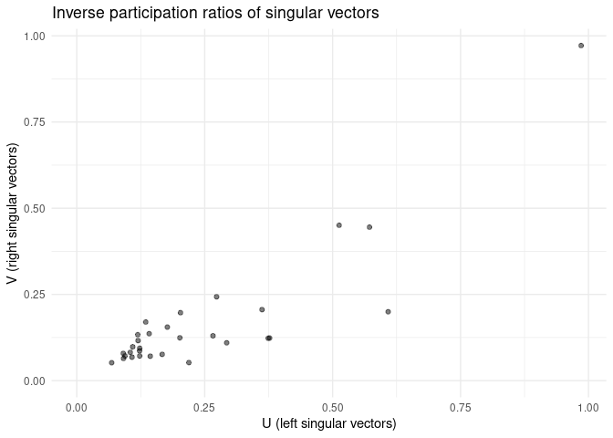
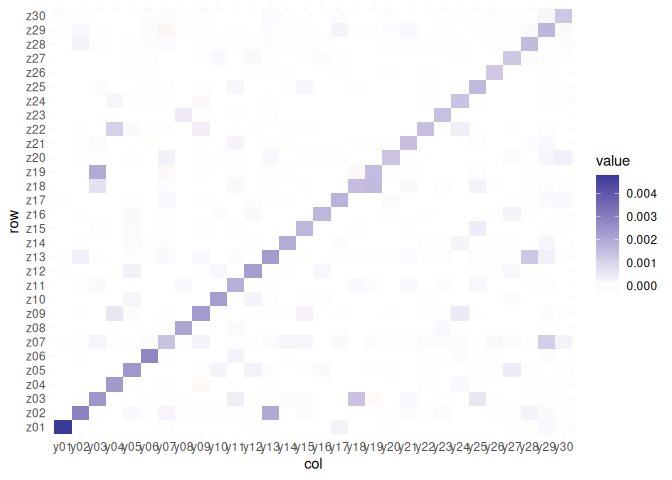

The goal of vsp is to enable fast, spectral estimation of latent factors in random dot product graphs. Under mild assumptions, the vsp estimator is consistent for (degree-corrected) stochastic blockmodels, (degree-corrected) mixed-membership stochastic blockmodels, and degree-corrected overlapping stochastic blockmodels.
More generally, the vsp estimator is consistent for random dot product graphs that can be written in the form
where Z and Y satisfy the varimax assumptions of [1]. vsp works on directed and undirected graphs, and on weighted and unweighted graphs. Note that vsp is a semi-parametric estimator.
Installation
You can install the released version of vsp from CRAN with
install.packages("vsp")You can install the development version of vsp with:
install.packages("devtools")
devtools::install_github("RoheLab/vsp")Example
Obtaining estimates from vsp is straightforward. We recommend representing networks as igraph objects or sparse adjacency matrices using the Matrix package. Once you have your network in one of these formats, you can get estimates by calling the vsp() function. The result is a vsp_fa S3 object.
Here we demonstrate vsp usage on an igraph object, using the enron network from igraphdata package to demonstrate this functionality. First we peak at the graph:
library(igraph)
data(enron, package = "igraphdata")
image(sign(get.adjacency(enron, sparse = FALSE)))
Now we estimate:
library(vsp)
fa <- vsp(enron, rank = 30)
fa
#> Vintage Sparse PCA Factor Analysis
#>
#> Rows (n): 184
#> Cols (d): 184
#> Factors (rank): 30
#> Lambda[rank]: 0.2077
#> Components
#>
#> Z: 184 x 30 [dgeMatrix]
#> B: 30 x 30 [dgeMatrix]
#> Y: 184 x 30 [dgeMatrix]
#> u: 184 x 30 [matrix]
#> d: 30 [numeric]
#> v: 184 x 30 [matrix]
get_varimax_z(fa)
#> # A tibble: 184 × 31
#> id z01 z02 z03 z04 z05 z06 z07 z08
#> <chr> <dbl> <dbl> <dbl> <dbl> <dbl> <dbl> <dbl> <dbl>
#> 1 row0… 2.42e-4 -0.00245 -2.99e-2 3.37e-4 9.96e-5 -0.0114 -0.00849 0.502
#> 2 row0… -2.52e-3 0.00135 6.70e-4 -1.63e-1 -1.47e-2 0.0471 0.190 0.00181
#> 3 row0… 2.98e-4 -0.100 1.17e-4 -3.62e-3 -2.06e-2 0.187 -0.158 0.00303
#> 4 row0… -7.75e-5 -0.0183 1.17e-4 5.42e-2 -5.58e-3 0.00165 -0.0367 -0.00106
#> 5 row0… -2.31e-3 0.00150 2.57e-1 -1.42e-2 -4.38e-2 0.00629 1.18 -0.0179
#> 6 row0… -3.46e-2 -0.0527 -2.61e-2 -1.26e-2 -1.83e-2 0.0282 0.408 -0.0286
#> 7 row0… -1.08e-3 -0.327 -6.01e-1 -6.98e-2 -9.85e-2 -0.0709 0.509 0.0511
#> 8 row0… 1.58e-2 -0.0518 -1.34e-2 -1.03e-2 -4.12e-3 -0.0139 0.225 -0.0244
#> 9 row0… 2.22e-3 0.0752 3.30e-2 -6.50e-4 -5.00e-1 -0.0278 -0.0740 -0.00556
#> 10 row0… 7.13e-4 -0.0119 1.95e-2 -5.06e-3 -7.08e-3 0.00341 -0.00369 13.4
#> # … with 174 more rows, and 22 more variables: z09 <dbl>, z10 <dbl>, z11 <dbl>,
#> # z12 <dbl>, z13 <dbl>, z14 <dbl>, z15 <dbl>, z16 <dbl>, z17 <dbl>,
#> # z18 <dbl>, z19 <dbl>, z20 <dbl>, z21 <dbl>, z22 <dbl>, z23 <dbl>,
#> # z24 <dbl>, z25 <dbl>, z26 <dbl>, z27 <dbl>, z28 <dbl>, z29 <dbl>, z30 <dbl>To visualize a screeplot of the singular value, use:
screeplot(fa)
At the moment, we also enjoy using pairs plots of the factors as a diagnostic measure:
plot_varimax_z_pairs(fa, 1:5)
plot_varimax_y_pairs(fa, 1:5)
Similarly, an IPR pairs plot can be a good way to check for singular vector localization (and thus overfitting!).
plot_ipr_pairs(fa)

References
- Rohe, K. & Zeng, M. Vintage Factor Analysis with Varimax Performs Statistical Inference. 2022+. https://arxiv.org/abs/2004.05387.
Code to reproduce the results from the paper is available here.